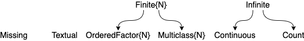

MLJ Cheatsheet
Starting an interactive MLJ session
julia> using MLJ
julia> MLJ_VERSION # version of MLJ for this cheatsheet
v"0.17.1"Model search and code loading
info("PCA") retrieves registry metadata for the model called "PCA"
info("RidgeRegressor", pkg="MultivariateStats") retrieves metadata for "RidgeRegresssor", which is provided by multiple packages
models() lists metadata of every registered model.
models("Tree") lists models with "Tree" in the model or package name.
models(x -> x.is_supervised && x.is_pure_julia) lists all supervised models written in pure julia.
models(matching(X)) lists all unsupervised models compatible with input X.
models(matching(X, y)) lists all supervised models compatible with input/target X/y.
With additional conditions:
models() do model
matching(model, X, y) &&
model.prediction_type == :probabilistic &&
model.is_pure_julia
endTree = @load DecisionTreeClassifier pkg=DecisionTree imports "DecisionTreeClassifier" type and binds it to Tree tree = Tree() to instantiate a Tree.
tree2 = Tree(max_depth=2) instantiates a tree with different hyperparameter
Ridge = @load RidgeRegressor pkg=MultivariateStats imports a type for a model provided by multiple packages
For interactive loading instead use @iload
Scitypes and coercion
scitype(x) is the scientific type of x. For example scitype(2.4) == Continuous

| type | scitype |
|---|---|
AbstractFloat | Continuous |
Integer | Count |
CategoricalValue and CategoricalString | Multiclass or OrderedFactor |
AbstractString | Textual |
Figure and Table for common scalar scitypes
Use schema(X) to get the column scitypes of a table X
coerce(y, Multiclass) attempts coercion of all elements of y into scitype Multiclass
coerce(X, :x1 => Continuous, :x2 => OrderedFactor) to coerce columns :x1 and :x2 of table X.
coerce(X, Count => Continuous) to coerce all columns with Count scitype to Continuous.
Ingesting data
Split the table channing into target y (the :Exit column) and features X (everything else), after a seeded row shuffling:
using RDatasets
channing = dataset("boot", "channing")
y, X = unpack(channing, ==(:Exit); rng=123)Same as above but exclude :Time column from X:
using RDatasets
channing = dataset("boot", "channing")
y, X = unpack(channing,
==(:Exit), # y is the :Exit column
!=(:Time); # X is the rest, except :Time
rng=123)Splitting row indices into train/validation/test, with seeded shuffling:
train, valid, test = partition(eachindex(y), 0.7, 0.2, rng=1234) for 70:20:10 ratio
For a stratified split:
train, test = partition(eachindex(y), 0.8, stratify=y)
Split a table or matrix X, instead of indices:
Xtrain, Xvalid, Xtest = partition(X, 0.5, 0.3, rng=123)
Getting data from OpenML:
table = OpenML.load(91)
Creating synthetic classification data:
X, y = make_blobs(100, 2) (also: make_moons, make_circles)
Creating synthetic regression data:
X, y = make_regression(100, 2)
Machine construction
Supervised case:
model = KNNRegressor(K=1) and mach = machine(model, X, y)
Unsupervised case:
model = OneHotEncoder() and mach = machine(model, X)
Fitting
fit!(mach, rows=1:100, verbosity=1, force=false) (defaults shown)
Prediction
Supervised case: predict(mach, Xnew) or predict(mach, rows=1:100)
Similarly, for probabilistic models: predict_mode, predict_mean and predict_median.
Unsupervised case: transform(mach, rows=1:100) or inverse_transform(mach, rows), etc.
Inspecting objects
@more gets detail on last object in REPL
params(model) gets nested-tuple of all hyperparameters, even nested ones
info(ConstantRegressor()), info("PCA"), info("RidgeRegressor", pkg="MultivariateStats") gets all properties (aka traits) of registered models
info(rms) gets all properties of a performance measure
schema(X) get column names, types and scitypes, and nrows, of a table X
scitype(X) gets scientific type of X
fitted_params(mach) gets learned parameters of fitted machine
report(mach) gets other training results (e.g. feature rankings)
Saving and retrieving machines
MLJ.save("trained_for_five_days.jlso", mach) to save machine mach
predict_only_mach = machine("trained_for_five_days.jlso") to deserialize.
Performance estimation
evaluate(model, X, y, resampling=CV(), measure=rms, operation=predict, weights=..., verbosity=1)
evaluate!(mach, resampling=Holdout(), measure=[rms, mav], operation=predict, weights=..., verbosity=1)
evaluate!(mach, resampling=[(fold1, fold2), (fold2, fold1)], measure=rms)
Resampling strategies (resampling=...)
Holdout(fraction_train=0.7, rng=1234) for simple holdout
CV(nfolds=6, rng=1234) for cross-validation
StratifiedCV(nfolds=6, rng=1234) for stratified cross-validation
TimeSeriesSV(nfolds=4) for time-series cross-validation
or a list of pairs of row indices:
[(train1, eval1), (train2, eval2), ... (traink, evalk)]
Tuning
Tuning model wrapper
tuned_model = TunedModel(model=…, tuning=RandomSearch(), resampling=Holdout(), measure=…, operation=predict, range=…)
Ranges for tuning (range=...)
If r = range(KNNRegressor(), :K, lower=1, upper = 20, scale=:log)
then Grid() search uses iterator(r, 6) == [1, 2, 3, 6, 11, 20].
lower=-Inf and upper=Inf are allowed.
Non-numeric ranges: r = range(model, :parameter, values=…)
Nested ranges: Use dot syntax, as in r = range(EnsembleModel(atom=tree), :(atom.max_depth), ...)
Can specify multiple ranges, as in range=[r1, r2, r3]. For more range options do ?Grid or ?RandomSearch
Tuning strategies
RandomSearch(rng=1234) for basic random search
Grid(resolution=10) or Grid(goal=50) for basic grid search
Also available: LatinHyperCube, Explicit (built-in), MLJTreeParzenTuning, ParticleSwarm, AdaptiveParticleSwarm (3rd-party packages)
Learning curves
For generating plot of performance against parameter specified by range:
curve = learning_curve(mach, resolution=30, resampling=Holdout(), measure=…, operation=predict, range=…, n=1)
curve = learning_curve(model, X, y, resolution=30, resampling=Holdout(), measure=…, operation=predict, range=…, n=1)
If using Plots.jl:
plot(curve.parameter_values, curve.measurements, xlab=curve.parameter_name, xscale=curve.parameter_scale)
Controlling iterative models
Requires: using MLJIteration
iterated_model = IteratedModel(model=…, resampling=Holdout(), measure=…, controls=…, retrain=false)
Controls
Increment training: Step(n=1)
Stopping: TimeLimit(t=0.5) (in hours), NumberLimit(n=100), NumberSinceBest(n=6), NotANumber(), Threshold(value=0.0), GL(alpha=2.0), PQ(alpha=0.75, k=5), Patience(n=5)
Logging: Info(f=identity), Warn(f=""), Error(predicate, f="")
Callbacks: Callback(f=mach->nothing), WithNumberDo(f=n->@info(n)), WithIterationsDo(f=i->@info("num iterations: $i")), WithLossDo(f=x->@info("loss: $x")), WithTrainingLossesDo(f=v->@info(v))
Snapshots: Save(filename="machine.jlso")
Wraps: MLJIteration.skip(control, predicate=1), IterationControl.with_state_do(control)
Performance measures (metrics)
Do measures() to get full list.
info(rms) to list properties (aka traits) of the rms measure
Transformers
Built-ins include: Standardizer, OneHotEncoder, UnivariateBoxCoxTransformer, FeatureSelector, FillImputer, UnivariateDiscretizer, ContinuousEncoder, UnivariateTimeTypeToContinuous
Externals include: PCA (in MultivariateStats), KMeans, KMedoids (in Clustering).
models(m -> !m.is_supervised) to get full list
Ensemble model wrapper
EnsembleModel(atom=…, weights=Float64[], bagging_fraction=0.8, rng=GLOBAL_RNG, n=100, parallel=true, out_of_bag_measure=[])
Target transformation wrapper
TransformedTargetModel(model=ConstantClassifier(), target=Standardizer())
Pipelines
pipe = (X -> coerce(X, :height=>Continuous)) |> OneHotEncoder |> KNNRegressor(K=3)
Unsupervised:
pipe = Standardizer |> OneHotEncoder
Concatenation:
pipe1 |> pipe2 or model |> pipe or pipe |> model, etc
Define a supervised learning network:
Xs = source(X) ys = source(y)
... define further nodal machines and nodes ...
yhat = predict(knn_machine, W, ys) (final node)
Exporting a learning network as stand-alone model:
Supervised, with final node yhat returning point-predictions:
@from_network machine(Deterministic(), Xs, ys; predict=yhat) begin
mutable struct Composite
reducer=network_pca
regressor=network_knn
endHere network_pca and network_knn are models appearing in the learning network.
Supervised, with yhat final node returning probabilistic predictions:
@from_network machine(Probabilistic(), Xs, ys; predict=yhat) begin
mutable struct Composite
reducer=network_pca
classifier=network_tree
endUnsupervised, with final node Xout:
@from_network machine(Unsupervised(), Xs; transform=Xout) begin
mutable struct Composite
reducer1=network_pca
reducer2=clusterer
end
endUnivariateTimeTypeToContinuous